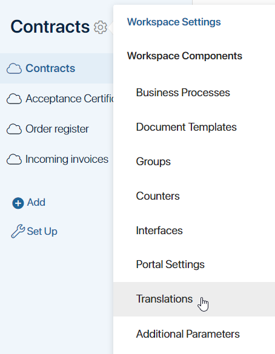
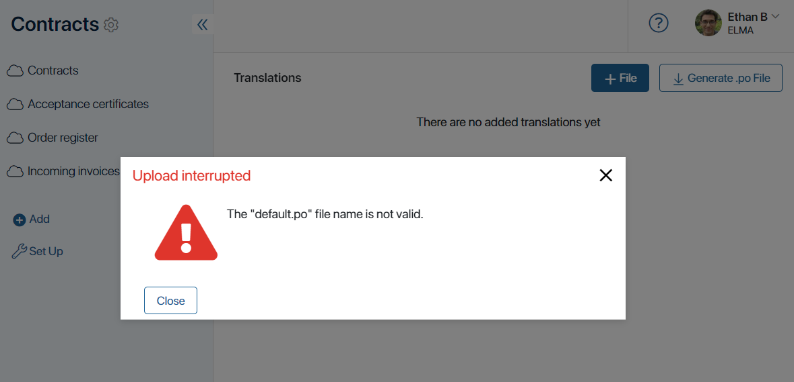
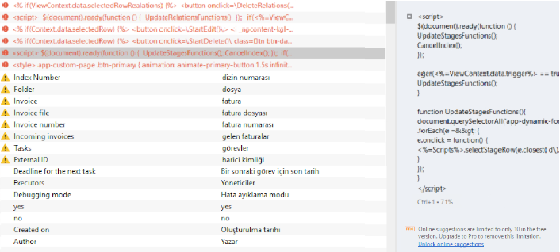
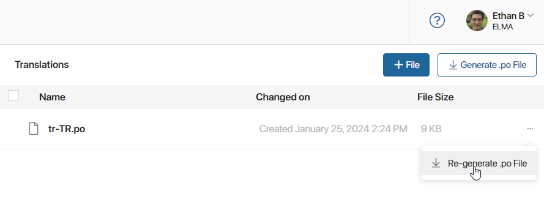

В ELMA365 можно изменять язык интерфейса в настройках локали и профиле пользователя. Использовать можно один из поддерживаемых языков. Если для компании или отдельных пользователей нужен перевод интерфейса на язык, недоступный по умолчанию, вы можете добавить дополнительную локаль. Для этого:
- Создайте и установите модуль типа Языковой пакет для новой локали.
- Переведите пользовательскую конфигурацию и системные разделы.
- Выполните проверку новой локали.
Если вы хотите изменить стандартные переводы для языков, доступных по умолчанию, выполните те же действия, что и для установки новой локали.
Создать и установить языковой пакет
- Отправьте запрос на новую локаль в техподдержку.
Специалист направит вашу заявку разработчику и после её выполнения передаст вам:
- список .po-файлов с ресурсами для перевода;
- утилиту с инструкцией для создания из этих файлов модуля типа Языковой пакет для целевой локали.
- Переведите ресурсы в полученных файлах формата .po, используя специальную программу, например Poеdit.
- Соберите модуль типа Языковой пакет в виде файла формата .e365, запустив утилиту согласно инструкции.
- Проверьте корректность работы модуля.
- Установите модуль. Если в нём содержатся некорректно переведённые данные, во время установки возникнет ошибка. В этом случае проверьте перевод .po-файлов через специальную программу, например Poеdit
- Включите модуль.

После этого в настройках компании и профиле пользователя можно переключить язык интерфейса на новый. Название и код языка задаются установленным модулем.
Если новая локаль нужна только отдельным пользователям, вы можете не менять язык в настройках компании.
- Чтобы обновить локаль, повторите шаги, указанные выше. Новые ресурсы появляются после каждого обновления системы. Получите файлы формата .po с новыми ресурсами, добавьте их в модуль и установите его. Для каждого языка в системе может использоваться только один модуль, поэтому установленный ранее языковой пакет целевой локали заменится на новый.
- После установки локали можно приступить к переводу пользовательской конфигурации. По умолчанию функция перевода недоступна. Обратитесь в техподдержку ELMA365, чтобы активировать эту опцию.
Обратите внимание, системные разделы CRM, Поступления, Маркетинг, Линии, Проекты и Системные справочники не переводятся в модуле. Для новой локали переведите их так же, как пользовательскую конфигурацию.
Перевести пользовательскую конфигурацию
Пользовательские модули, разделы, приложения, страницы, виджеты и бизнес-процессы переводятся через выгрузку ресурсов.
начало внимание
Перевод конфигурации недоступен по умолчанию. Для активации опции обратитесь в техподдержку ELMA365. Если функция перевода включена, в настройках разделов и пользовательских модулей появится пункт Переводы.
конец внимание
Чтобы добавить перевод ресурсов:
- Откройте страницу Переводы в настройках компонента системы, выполнив следующие действия:
- для пользовательских модулей — перейдите в раздел Администрирование > Модули, выберите нужный модуль, нажмите Управление и откройте вкладку Переводы;
- для пользовательских и системных разделов — перейдите на страницу раздела, нажмите на значок шестерёнки рядом с его названием и выберите пункт Переводы.

Дальнейшие действия одинаковы для перевода ресурсов модулей и разделов.
- Загрузите на ПК файл с ресурсами текущего раздела или модуля. Для этого на странице Переводы в правом верхнем углу нажмите кнопку Сгенерировать .po файл.
- en-US.po — для английского (United States);
- en-UK.po — для английского (United Kingdom);
- tr-TR.po — для турецкого (Turkey).
Файл формата .po содержит список оригинальных ресурсов раздела (msgid) и пустые строки для их перевода (msgstr), например:
msgid "Мои юридические лица"
msgstr ""
msgid "Юридическое лицо"
msgstr ""
msgid "Название"
msgstr ""
msgid "Полное наименование"
msgstr ""
msgid "Юридический адрес"
msgstr ""
msgid "Фактический адрес"
msgstr ""
msgid "ИНН"
msgstr ""
msgid "КПП"
msgstr ""
msgid "Расчетный счет"
msgstr ""
- Откройте .po-файл через специальную программу для перевода, например Poеdit, и выполните в нём перевод ресурсов. При этом пустые строки в файле заполнятся.
начало внимание
Переводите ресурсы в специализированной программе, чтобы в дальнейшем исключить возможные ошибки.
конец внимание
Рекомендуем сохранять файлы формата .po с выполненными переводами локально на ПК. Они могут пригодиться на случай потери данных, например после обновления системных разделов.
- Загрузите файл с выполненным переводом обратно в раздел или модуль. Для этого на странице Переводы нажмите кнопку +Файл. Обратите внимание, если название файла не соответствует коду локали, возникнет ошибка.

Загруженный перевод автоматически применится, если пользователь в настройках профиля выберет соответствующий язык интерфейса.
начало внимание
Все функции раздела Администрирование доступны только на исходном языке интерфейса, который использовался при создании компании. Для работы в этом разделе администратору достаточно в своём профиле изменить язык на исходный.
конец внимание
- Таким образом создайте и загрузите файлы формата .po для каждой локали, используемой в вашей компании.
Перевод в скриптах
В пользовательских скриптах, включая скрипты в виджете Код, для перевода строк используйте объект SR, для которого есть метод T(str: string): string.
Тогда строка, указанная в методе, добавится в файл формата .po раздела или модуля. Затем добавьте перевод этой строки в .po-файл и загрузите его с целевой локалью обратно в раздел или модуль. Если после этого пользователь в настройках профиля сменит локаль, выполнится перевод строки на значение, указанное в файле формата .po.
Пример скрипта в виджете Код с использованием функции перевода:
<% if (true) { %>
You can delete this block after reading.
<br>
/* SR.T('комментарий') */
Перевод строки: <%= SR.T('строка 1') %>
<% } %>
При генерации .po-файла в него добавится значение строка 1.
Проверить новую локаль
Если локаль установлена некорректно, возникнут ошибки: пустой интерфейс разделов, не загружается страница и др. Чтобы этого избежать, выполните проверку. При этом рекомендуем использовать режим инкогнито или другой браузер.
- Убедитесь, что в настройках разделов и модулей:
Если вы импортировали раздел или модуль из другой компании, проверьте, что в его настройках указан исходный язык интерфейса. Установив исходный язык до выполнения экспорта, после импорта в целевую компанию вы увидите его указанным в настройках по умолчанию.
- Проверьте, что в настройках профиля пользователя новый язык доступен для выбора.
- Установите в своём профиле новый язык и проверьте перевод интерфейса на страницах разделов системы.
Ошибки в установке локали и их причины
- Ошибка: после смены языка в профиле пользователя не загружается страница. При этом текст ошибки в консоли ссылается на языковой пакет.
Стандартная причина такой ошибки: не установлен исходный язык в настройках раздела.
Причиной может быть некорректный перевод ресурсов в .po-файле. Чтобы этого избежать, переводите файлы формата .po в специальной программе, например Poеdit. Исправляйте некорректный перевод также в этой программе.
Пример .po-файла с ошибками, который открыт в Poеdit:

- Ошибка оформления кода в файле формата .po.
Причиной может быть некорректное использование двойных кавычек. Соблюдайте следующие правила их оформления:
- Двойные кавычки могут быть только в начале и конце каждой строки перевода.
Пример кода с ошибкой:
msgid ""
"текст1\n"
"текст2\n"
msgstr ""text1\n"text2\n"
Пример верного кода 1:
msgid ""
"текст1\n"
"текст2\n"
msgstr "text1\ntext2\n"
Пример верного кода 2:
msgid ""
"текст1\n"
"текст2\n"
msgstr ""
"text1\n"
"text2\n"
- Если двойные кавычки нужны внутри перевода, их нужно экранировать знаком \, например:
msgstr "Add the \"Start\" button";
msgstr "Тестовое значение равно = \"1\""
Другие особенности оформления кода в .po-файле:
- если значение параметра
msgstrразбито на две строки, вы можете его написать в одну строку. Это не вызовет ошибку; - значение параметра
msgid(ключ перевода) нельзя изменять, чтобы исключить такие ошибки, как опечатки, лишние пробелы, изменение регистра и т. п. При наличии этих ошибок ключ перевода может не примениться; - если в переводе есть специальные символы, их также нельзя изменять. В этом случае переводите только русские слова.
Дополнить перевод
Если вы внесли изменения в разделе, например, добавили приложение, дополните переводы во всех файлах формата .po. Для этого:
- В настройках раздела или модуля перейдите на страницу Переводы.
- Справа от названия каждого файла нажмите на три точки и выберите Перегенерировать .po файл. Новые ресурсы с пустым переводом добавятся в файлы формата .po, а выполненные ранее переводы сохранятся.

- Загрузите .po-файлы на ПК и добавьте новые переводы, используя специальную программу, например Poеdit.
- Перейдите на страницу Переводы, выберите устаревшие файлы формата .po и удалите их.

- Нажмите +Файл и загрузите дополненные .po-файлы с выполненным переводом.